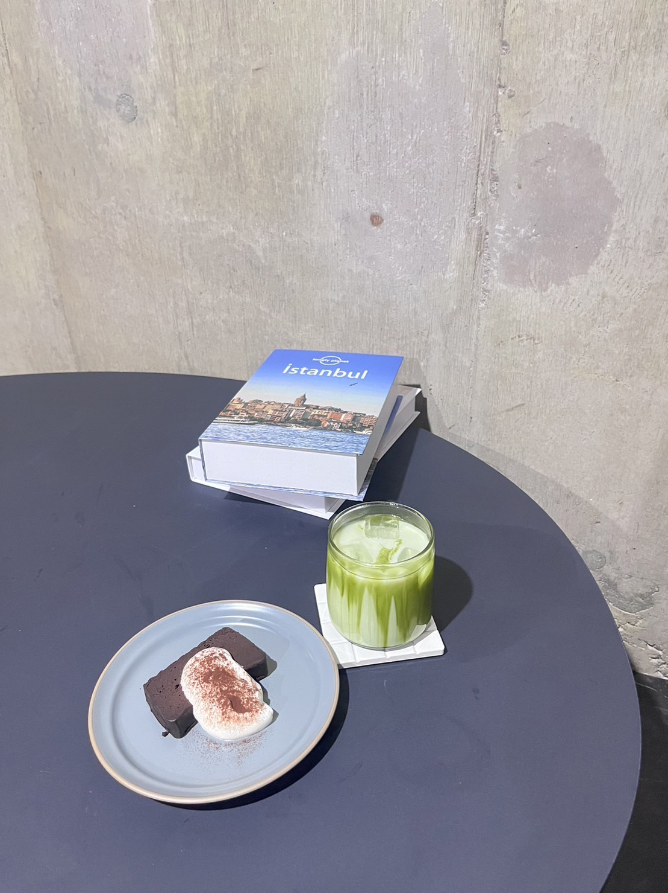

抹茶の醍醐味 - ほろ苦い至福の抹茶ドリンク特集 -
緑茶の魅力が溢れる、心地よいひとときを提供する抹茶ドリンクの世界へようこそ！
1.八十八良葉舎 /8108kyouto

「八十八良葉舎」は濃厚な抹茶スイーツが楽しめるお店です。写真の抹茶ラテは抹茶とミルクだけで仕上げてあり、抹茶のおいしさを強く感じることができます。シロップ追加すると甘みが少し出ておすすめです。トッピングでアイスやバターサンドもおすすめ！
店内座席はないので、テイクアウトでお店の外の席で飲むのがおすすめです。
アクセスマップ
店舗情報
2.甘味処鎌倉 倉敷美観地区店

「甘味処鎌倉」はわらびもちドリンクが大人気のわらびもち専門店です。ドリンクの中に入っているわらびもちがもちもちで新触感です。写真に写っている商品はテイクアウト限定の商品となっているのでお気を付けください。
アクセスマップ
店舗情報
3.cafe byeol
紹介文